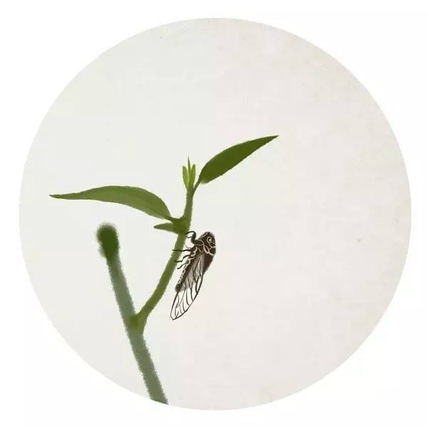
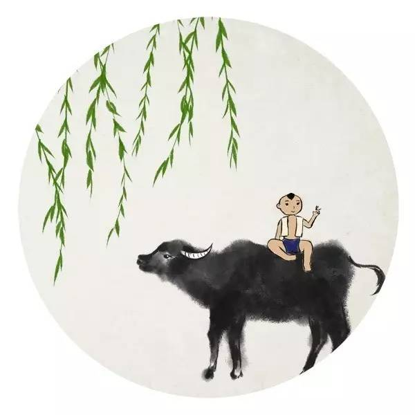
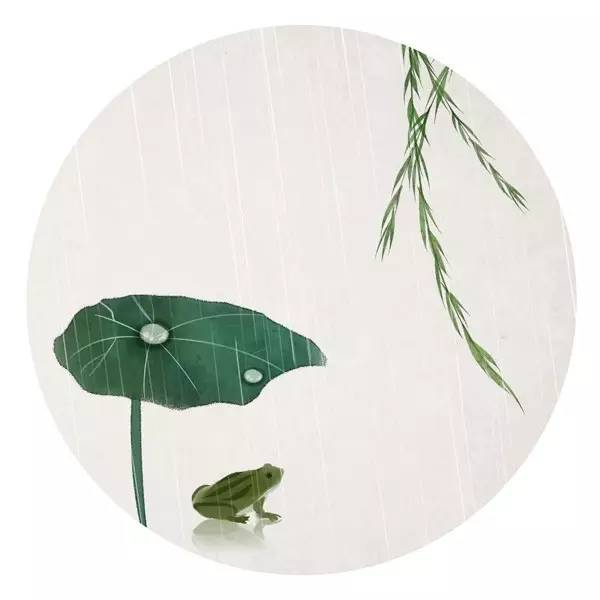
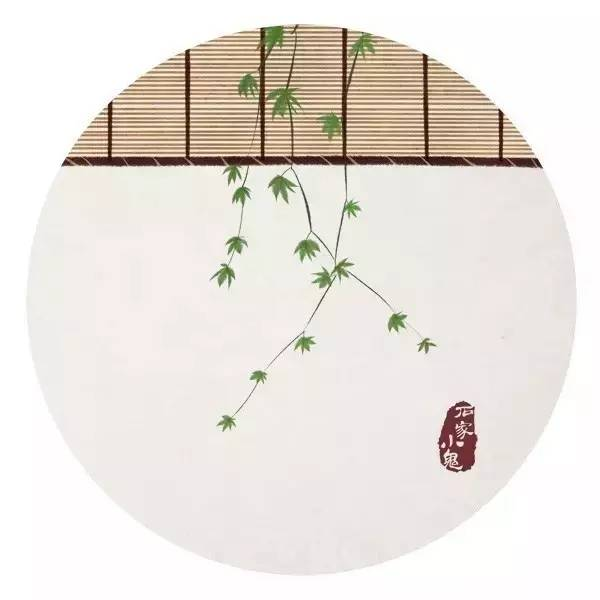
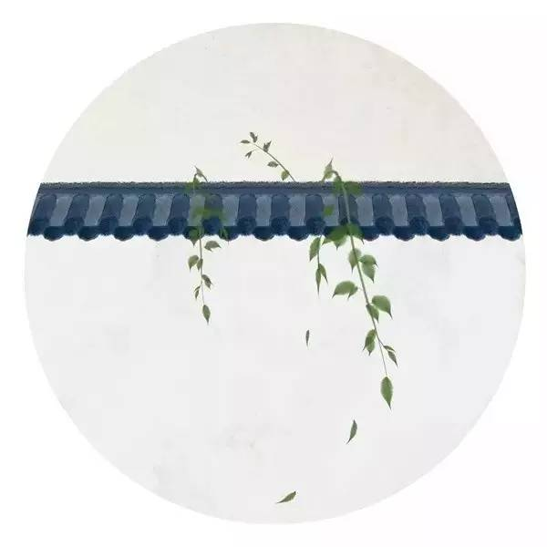
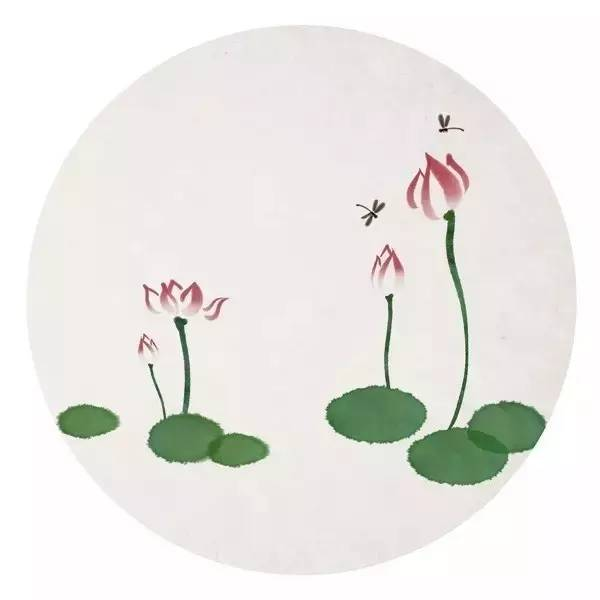
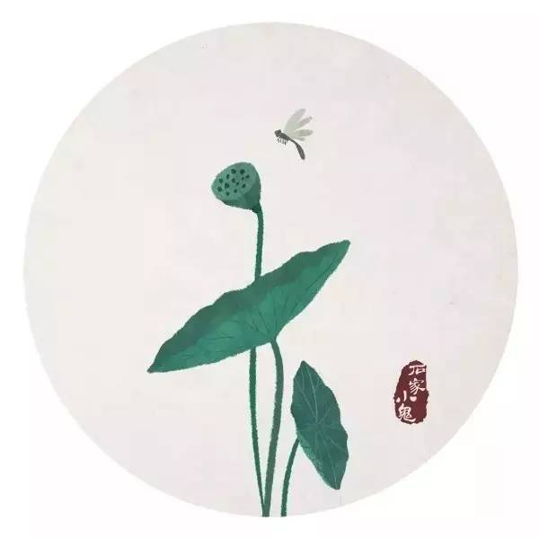
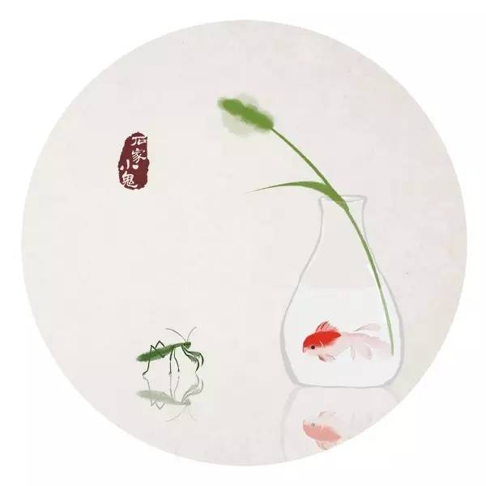
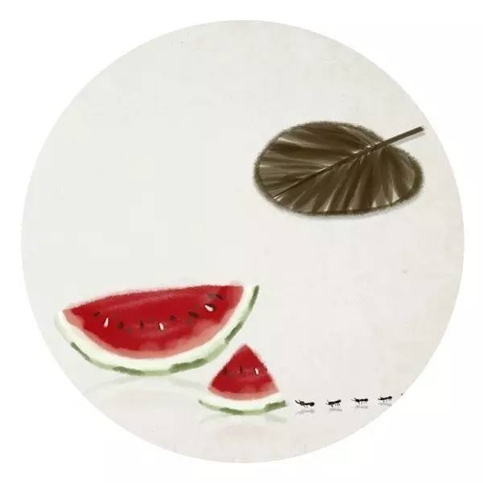

这些给炎夏吹去凉风的诗词
 1,614
1,614

是太阳永远耀眼，风一直温热，还是树上的蝉喋喋不休，远处池塘里的荷正生姿摇曳？
是恰逢一阵雷雨过后，热气散去一半，你把脚丫子兴奋地踩在泥水里，还是你在和伙伴的嬉笑打闹中，一边遥望东边天空架起的彩虹，一边听那荷塘此起彼伏的蛙鸣？

▌ 夏·蝉
《所见》
清 袁枚
牧童骑黄牛，歌声振林樾。
意欲捕鸣蝉，忽然闭口立。
袁枚的这首五言绝句对我们来说并不陌生。或许还是许多人小学时候的必背古诗词之一呢。
整首诗的用语看似简单通俗，但却画面感极强。诗共四句，却是截然不同的两幅画面，但主人公都是骑牛的牧童。
首先，一“骑”一“振”，将牧童的悠闲自得与无忧无虑刻画的形象生动。再次，一“闭”一“立”，又将孩童的天真烂漫和机智果敢展现的淋漓尽致。
而就在这一动一静之间，情与景完美契合，俨然成就了这首极具诗情画意之作，同时也见证了诗人内心的孩子气与真性情。

▌ 夏·雨
《喜晴》
宋 范成大
窗间梅熟落蒂，墙下笋成出林。
连雨不知春去，一晴方觉夏深。
一入夏，江南地区便迎来了梅雨时节。天空连日阴沉，降水连绵不断，从此江南地区便被笼罩进梦一样的轻纱。
诗人看到窗外梅子成熟落蒂，墙角的竹笋也已成长为林，多日的阴雨天气让人误以为春天还在，直等到天空放晴，方才察觉，原来季节早已到了盛夏。

▌ 夏·觉
《初夏睡起》
宋 杨万里
梅子流酸溅齿牙，芭蕉分绿上窗纱。
日长睡起无情思，闲看儿童捉柳花。
杨万里写夏日的诗句总是这样富有情趣与诗意。读完全诗，“初夏睡起图”的画面仿佛就在眼前。
梅子酸到倒牙，绿色芭蕉叶子扫到了窗纱，夏日午睡醒来无所事事，闲看嬉戏的儿童捕捉纷飞的柳絮，也是一件趣事呀。

▌ 夏·游
《西江月·夜行黄沙道中》
宋 辛弃疾
明月别枝惊鹊，清风半夜鸣蝉。
稻花香里说丰年，听取蛙声一片。
七八个星天外，两三点雨山前。
旧时茅店社林边，路转溪桥忽见。
辛弃疾的这首《西江月》是他在被贬官闲居江西黄沙岭时的作品。朗月清风，稀雨疏星，鸣蝉惊鹊，稻香蛙声……想必在农村生活过的小伙伴，对这样的夏夜情景并不陌生。
在此次的夜行中，词人走在丰收的乡间的小路上，将自己完全置于大自然的怀抱中，不疾不徐，优哉游哉，与明月清风一起融入这朗朗乾坤，不问世事忧烦，尽情享受宁静山村的夏夜迷人风光。

▌ 夏·池
《小池》
宋 杨万里
泉眼无声惜细流，树阴照水爱晴柔。
小荷才露尖尖角，早有蜻蜓立上头。
诗人从“小”处着眼，透过日常所见的平凡景物，捕捉到了这样一组情趣盎然的画面，细致而生动地展现了初夏小池中的动态感和生命力，自然真切，明媚动人，真是处处都充满了浓郁的夏日生活气息。读完清新之气扑面而来。

▌ 夏·荷
《苏幕遮·燎沈香》
宋 周邦彦
燎沈香，消溽暑。鸟雀呼晴，侵晓窥檐语。
叶上初阳干宿雨、水面清圆，一一风荷举。
故乡遥，何日去。家住吴门，久作长安旅。
五月渔郎相忆否。小楫轻舟，梦入芙蓉浦。
这首小令向来以描绘荷花的风神著称于世，但实为词人表达久居汴京、观荷消夏而思归之情。
词的上片写景，只三两句，便把一种活泼清新的氛围创造了出来，其中结构脉络连贯自然，视点变换也更极具层次。怪不得王国维在《人间词话》中赞其曰“真能得荷花之神理者”。
下片以“故乡”开头，言辞质朴，不加雕饰。由眼前五月水面清圆，风荷凌举的景象联想到相似的故乡吴门五月的风物。最后一句以梦结尾，虽虚而实，再一次使其思归之情在梦中得到片刻的满足。

▌ 夏·夜
《夏日六言》
宋 陆游
溪涨清风拂面，月落繁星满天。
数只船横浦口，一声笛起山前。
这是陆游晚年退居山阴时所作。全诗共四句，24字，一句一景，但却唤醒了我们的多种感知，动静相宜、虚实结合、层次分明地将一幅恬淡、静谧、悠远的山乡夏夜图呈现在我们面前，实为写景诗中不可多得的佳作。

▌ 夏·意
《夏意》
宋 苏舜钦
别院深深夏席清，石榴开遍透帘明。
树阴满地日当午，梦觉流莺时一声。
深深别院竹席冰凉，幕帘之外榴花开遍，正阳当午树荫满地，午睡醒来恰听莺声……
苏舜钦的这首《夏意》诗，无一句不是在写夏景，然而又句句透着清爽之意，唇齿开合间，似有微风拂面。整首诗格调明朗活泼，逸气流转，清而不弱。在这炎炎夏日，让我们自然而然的体会到了一种清幽之境，悠旷之情。
夏天啊，就应当是这样静谧而热闹的呀。
来源：中国汉字听写大会